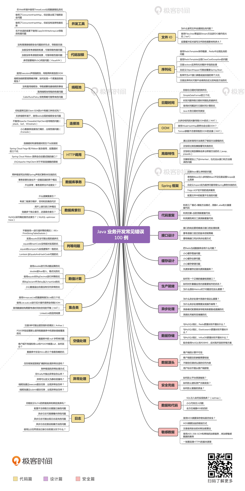

- 00 开篇词 业务代码真的会有这么多坑？.md.html
- 01 使用了并发工具类库，线程安全就高枕无忧了吗？.md.html
- 02 代码加锁：不要让“锁”事成为烦心事.md.html
- 03 线程池：业务代码最常用也最容易犯错的组件.md.html
- 04 连接池：别让连接池帮了倒忙.md.html
- 05 HTTP调用：你考虑到超时、重试、并发了吗？.md.html
- 06 2成的业务代码的Spring声明式事务，可能都没处理正确.md.html
- 07 数据库索引：索引并不是万能药.md.html
- 08 判等问题：程序里如何确定你就是你？.md.html
- 09 数值计算：注意精度、舍入和溢出问题.md.html
- 10 集合类：坑满地的List列表操作.md.html
- 11 空值处理：分不清楚的null和恼人的空指针.md.html
- 12 异常处理：别让自己在出问题的时候变为瞎子.md.html
- 13 日志：日志记录真没你想象的那么简单.md.html
- 14 文件IO：实现高效正确的文件读写并非易事.md.html
- 15 序列化：一来一回你还是原来的你吗？.md.html
- 16 用好Java 8的日期时间类，少踩一些“老三样”的坑.md.html
- 17 别以为“自动挡”就不可能出现OOM.md.html
- 18 当反射、注解和泛型遇到OOP时，会有哪些坑？.md.html
- 19 Spring框架：IoC和AOP是扩展的核心.md.html
- 20 Spring框架：框架帮我们做了很多工作也带来了复杂度.md.html
- 21 代码重复：搞定代码重复的三个绝招.md.html
- 22 接口设计：系统间对话的语言，一定要统一.md.html
- 23 缓存设计：缓存可以锦上添花也可以落井下石.md.html
- 24 业务代码写完，就意味着生产就绪了？.md.html
- 25 异步处理好用，但非常容易用错.md.html
- 26 数据存储：NoSQL与RDBMS如何取长补短、相辅相成？.md.html
- 27 数据源头：任何客户端的东西都不可信任.md.html
- 28 安全兜底：涉及钱时，必须考虑防刷、限量和防重.md.html
- 29 数据和代码：数据就是数据，代码就是代码.md.html
- 30 如何正确保存和传输敏感数据？.md.html
- 31 加餐1：带你吃透课程中Java 8的那些重要知识点（一）.md.html
- 32 加餐2：带你吃透课程中Java 8的那些重要知识点（二）.md.html
- 33 加餐3：定位应用问题，排错套路很重要.md.html
- 34 加餐4：分析定位Java问题，一定要用好这些工具（一）.md.html
- 35 加餐5：分析定位Java问题，一定要用好这些工具（二）.md.html
- 36 加餐6：这15年来，我是如何在工作中学习技术和英语的？.md.html
- 37 加餐7：程序员成长28计.md.html
- 38 加餐8：Java程序从虚拟机迁移到Kubernetes的一些坑.md.html
- 答疑篇：代码篇思考题集锦（一）.md.html
- 答疑篇：代码篇思考题集锦（三）.md.html
- 答疑篇：代码篇思考题集锦（二）.md.html
- 答疑篇：加餐篇思考题答案合集.md.html
- 答疑篇：安全篇思考题答案合集.md.html
- 答疑篇：设计篇思考题答案合集.md.html
- 结束语 写代码时，如何才能尽量避免踩坑？.md.html
00 开篇词 业务代码真的会有这么多坑？
你好，我是朱晔，贝壳金服的资深架构师。
我先和你说说我这 15 年的工作经历吧，以加深彼此的了解。前 7 年，我专注于.NET 领域，负责业务项目的同时，也做了很多社区工作。在 CSDN 做版主期间，我因为回答了大量有关.NET 的问题，并把很多问题的答案总结成了博客，获得了 3 次微软 MVP 的称号。
后来，我转到了 Java 领域，也从程序员变为了架构师，更关注开源项目和互联网架构设计。在空中网，我整体负责了百万人在线的大型 MMO 网游《激战》技术平台的架构设计，期间和团队开发了许多性能和稳定性都不错的 Java 框架；在饿了么，我负责过日千万订单量的物流平台的开发管理和架构工作，遇到了许多只有高并发下才会出现的问题，积累了大量的架构经验；现在，我在贝壳金服的基础架构团队，负责基础组件、中间件、基础服务开发规划，制定一些流程和规范，带领团队自研 Java 后端开发框架、微服务治理平台等，在落地 Spring Cloud 结合 Kubernetes 容器云平台技术体系的过程中，摸索出了很多适合公司项目的基础组件和最佳实践。
这 15 年来，我一直没有脱离编码工作，接触过大大小小的项目不下 400 个，自己亲身经历的、见别人踩过的坑不计其数。我感触很深的一点是，业务代码中真的有太多的坑：有些是看似非常简单的知识点反而容易屡次踩坑，比如 Spring 声明式事务不生效的问题；而有些坑因为“潜伏期”长，引发的线上事故造成了大量的人力和资金损失。因此，我系统梳理了这些案例和坑点，最终筛选出 100 个案例，涉及 130 多个坑点，组成了这个课程。
意识不到业务代码的坑，很危险
我想看到 100、130 这两个数字，你不禁要问了：“我写了好几年的业务代码了，遇到问题时上网搜一下就有答案，遇到最多的问题就是服务器不稳定，重启一下基本就可以解决，哪里会有这么多坑呢？”带着这个问题，你继续听我往下说吧。
据我观察，很多开发同学没意识到这些坑，有以下三种可能：
意识不到坑的存在，比如所谓的服务器不稳定很可能是代码问题导致的，很多时候遇到 OOM、死锁、超时问题在运维层面通过改配置、重启、扩容等手段解决了，没有反推到开发层面去寻找根本原因。
有些问题只会在特定情况下暴露。比如，缓存击穿、在多线程环境使用非线程安全的类，只有在多线程或高并发的情况才会暴露问题。
有些性能问题不会导致明显的 Bug，只会让程序运行缓慢、内存使用增加，但会在量变到质变的瞬间爆发。
而正是因为没有意识到这些坑和问题，采用了错误的处理方式，最后问题一旦爆发，处理起来就非常棘手，这是非常可怕的。下面这些场景有没有感觉似曾相识呢？
比如，我曾听说过有一个订单量很大的项目，每天总有上千份订单的状态或流程有问题，需要花费大量的时间来核对数据，修复订单状态。开发同学因为每天牵扯太多精力在排查问题上，根本没时间开发新需求。技术负责人为此头痛不已，无奈之下招了专门的技术支持人员。最后痛定思痛，才决定开启明细日志彻查这个问题，结果发现是自调用方法导致事务没生效的坑。
再比如，有个朋友告诉我，他们的金融项目计算利息的代码中，使用了 float 类型而不是 BigDecimal 类来保存和计算金额，导致给用户结算的每一笔利息都多了几分钱。好在，日终对账及时发现了问题。试想一下，结算的有上千个用户，每个用户有上千笔小订单，如果等月终对账的时候再发现，可能已经损失了几百万。
再比如，我们使用 RabbitMQ 做异步处理，业务处理失败的消息会循环不断地进入 MQ。问题爆发之前，可能只影响了消息处理的时效性。但等 MQ 彻底瘫痪时，面对 MQ 中堆积的、混杂了死信和正常消息的几百万条数据，你除了清空又能怎么办。但清空 MQ，就意味着要花费几小时甚至几十小时的时间，来补正常的业务数据，对业务影响时间很长。
像这样由一个小坑引发的重大事故，不仅仅会给公司造成损失，还会因为自责影响工作状态，降低编码的自信心。我就曾遇到过一位比较负责的核心开发同学，因为一个 Bug 给公司带来数万元的经济损失，最后心理上承受不住提出了辞职。
其实，很多时候不是我们不想从根本上解决问题，只是不知道问题到底在了哪里。要避开这些坑、找到这些定时炸弹，第一步就是得知道它们是什么、在哪里、为什么会出现。而讲清楚这些坑点和相关的最佳实践，正是本课程的主要内容。
这个课程是什么？
如果用几个关键词概括这个课程的话，那我会选择“Java”“业务开发”“避坑 100 例”这 3 个。接下来，我就和你详细说说这个课程是什么，以及有什么特点。
第一个关键词是“Java”，指的是课程内所有 Demo 都是基于 Java 语言的。
如果你熟悉 Java，那可以 100% 体会到这些坑点，也可以直接用这些 Demo 去检查你的业务代码是否也有类似的错误实现。
如果你不熟悉 Java 问题也不大，现在大部分高级语言的特性和结构都差不多，许多都是共性问题。此外“设计篇”“安全篇”的内容，基本是脱离具体语言层面的、高层次的问题。因此，即使不使用 Java，你也可以有不少收获，这也是本课程的第一个特点。
讲到这里，我要说明的是，这个课程是围绕坑点而不是 Java 语言体系展开的，因此不是系统学习 Java 的教材。
第二个关键词是“业务开发”，也就是说课程内容限定在业务项目的开发，侧重业务项目开发时可能遇到的坑。
我们先看“业务”这个词。做业务开发时间长的同学尤其知道，业务项目有两大特点：
工期紧、逻辑复杂，开发人员会更多地考虑主流程逻辑的正确实现，忽略非主流程逻辑，或保障、补偿、一致性逻辑的实现；
往往缺乏详细的设计、监控和容量规划的闭环，结果就是随着业务发展出现各种各样的事故。
根据这些性质，我总结出了近 30 个方面的内容，力求覆盖业务项目开发的关键问题。案例的全面性，是本课程的第二大特点。
这些案例可以看作是 Java 业务代码的避坑大全，帮助你写出更好的代码，也能帮你进一步补全知识网增加面试的信心。你甚至可以把二级目录当作代码审核的 Checklist，帮助业务项目一起成长和避坑。
我们再看“开发”这个词。为了更聚焦，也更有针对性，我把专栏内容限定在业务开发，不会过多地讨论架构、测试、部署运维等阶段的问题。而“设计篇”，重在讲述架构设计上可能会遇到的坑，不会全面、完整地介绍高可用、高并发、可伸缩性等架构因素。
第三个关键词是“避坑 100 例”。坑就是容易犯的错，避坑就是踩坑后分析根因，避免重复踩同样的坑。
整个课程 30 篇文章，涉及 100 个案例、约 130 个小坑，其中 40% 来自于我经历过或者是见过的 200 多个线上生产事故，剩下的 60% 来自于我开发业务项目，以及日常审核别人的代码发现的问题。贴近实际，而不是讲述过时的或日常开发根本用不到的技术或框架，就是本课程的第三大特点了。
大部分案例我会配合一个可执行的 Demo 来演示，Demo 中不仅有错误实现（踩坑），还有修正后的正确实现（避坑）。完整且连续、授人以渔，是本课程的第四大特点。
完整且连续，知其所以然。我会按照“知识介绍 -> 还原业务场景 -> 错误实现 -> 正确实现 -> 原理分析 -> 小总结 ”来讲解每个案例，针对每个坑点我至少会给出一个解决方案，并会挑选核心的点和你剖析源码。这样一来，你不仅能避坑，更能知道产生坑的根本原因，提升自己的技术能力。
授人以渔。在遇到问题的时候，我们一定是先通过经验和工具来定位分析问题，然后才能定位到坑，并不是一开始就知道为什么的。在这个课程中，我会尽可能地把分析问题的过程完整地呈现给你，而不是直接告诉你为什么，这样你以后遇到问题时也能有解决问题的思路。
这也是为什么，网络上虽然有很多关于 Java 代码踩坑的资料，但很多同学却和我反馈说，看过之后印象不深刻，也因为没吃透导致在一个知识点上重复踩坑。鉴于此，我还会与你分析我根据多年经验和思考，梳理出的一些最佳实践。
看到这里，是不是迫不及待地想要看看这个专栏的内容都会涉及哪些坑点了呢？那就看看下面这张思维导图吧：

鉴于这个专栏的内容和特点，我再和你说说最佳的学习方式是什么。
学习课程的最佳方法
我们都知道，编程是一门实践科学，只看不练、不思考，效果通常不会太好。因此，我建议你打开每篇文章后，能够按照下面的方式深入学习：
对于每一个坑点，实际运行调试一下源码，使用文中提到的工具和方法重现问题，眼见为实。
对于每一个坑点，再思考下除了文内的解决方案和思路外，是否还有其他修正方式。
对于坑点根因中涉及的 JDK 或框架源码分析，你可以找到相关类再系统阅读一下源码。
实践课后思考题。这些思考题，有的是对文章内容的补充，有的是额外容易踩的坑。
理解了课程涉及的所有案例后，你应该就对业务代码大部分容易犯错的点了如指掌了，不仅仅自己可以写出更高质量的业务代码，还可以在审核别人代码时发现可能存在的问题，帮助整个团队成长。
当然了，你从这个课程收获的将不仅是解决案例中那些问题的方法，还可以提升自己分析定位问题、阅读源码的能力。当你再遇到其他诡异的坑时，也能有清晰的解决思路，也可以成长为一名救火专家，帮助大家一起定位、分析问题。
好了，以上就是我今天想要和你分享的内容了。请赶快跟随我们的课程开启避坑之旅吧，也欢迎你留言说说自己的情况，你都踩过哪些坑、对写业务代码又有哪些困惑？我们下一讲见！